防災・防犯・緊急トップ
当番医
防災・防犯
消防・救急
暮らし・手続きトップ
戸籍・住民票・印鑑
助成・手当
ふるさと納税
税金
引越し・住まい
市民協働・コミュニティ
年金
水道・環境・ごみ
各種相談
生活支援
移住・定住
子育て・教育トップ
出産・子育て
学校・教育
健康
医療
健康・福祉トップ
観光・文化・スポーツトップ
観光
文化・スポーツ・生涯学習
公共施設
産業・ビジネストップ
農林業
入札・指定管理者
事業者向各種計画・届出
商工業
市政情報トップ
市長室
広報・広聴
深川市の概要
姉妹都市・国際交流
市政情報
2023年12月27日
5歳から11歳の新型コロナワクチン接種について
乳幼児の新型コロナワクチン接種について
令和5年度秋開始接種について
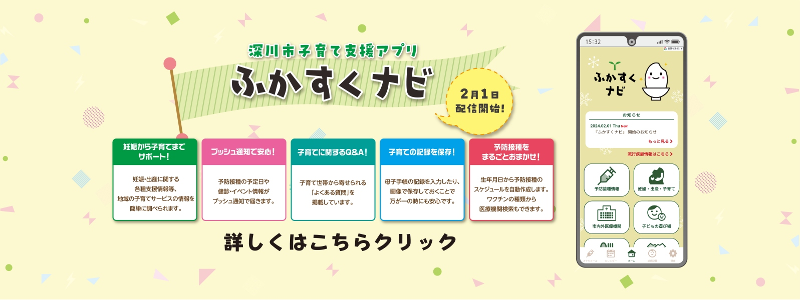
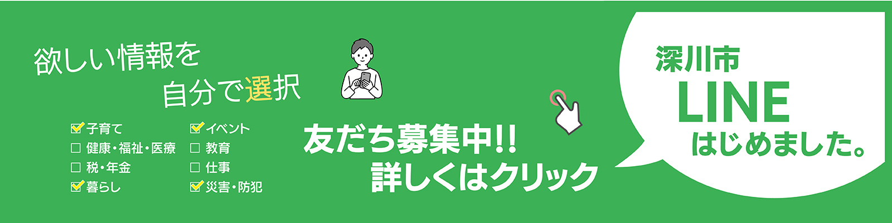
注目情報
新着情報
イベント
お知らせ
深川地域消費者センター
募集
会計年度任用職員(母子父子自立支援員)を募集します
令和6年10月1日採用予定の深川市職員を募集します
【企業版ふるさと納税】市外に本社のある企業の皆さまへ
介護職員養成研修（初任者研修・実務者研修）受講費用と介護福祉士国家試験受験に係る手数料を助成します
エネルギー・食料品価格等物価高騰支援給付金「均等割のみ課税世帯（令和5年）」・「こども加算」について
深川市パートナーシップ宣誓制度について
会計年度任用職員（保健師または管理栄養士）を募集します
会計年度任用職員 一般事務補助員（障がいのある方）を募集します
深川市地域おこし協力隊（有害鳥獣支援員）を募集します
RSS
一覧を見る
一般競争入札契約結果（4月17日）を掲載しました
<東京マラソン財団コラボイベント>FUKAGAWA HALF＆ENJOY RUN 2024会計年度任用職員 一般事務補助員（障がいのある方）を募集します
アートホール東洲館ギャラリー情報更新のお知らせ
検針票の誤りについて（4月17日・文光町の一部）
地域総合整備資金貸付（ふるさと融資）制度のご案内
狂犬病予防「集合注射」を実施します
入札
入札告示を更新しました
こどもまんなか応援サポーター宣言
市長動静（令和5年度）
教育委員会会議（定例会・臨時会）
【2024年04月17日（水曜日）開催】
[2024年04月29日（月曜日）まで]
東洲館4月後期展覧会
【2024年04月24日（水曜日）開催】
離乳食教室 ファースト（3～5か月児）
【2024年04月26日（金曜日）開催】
夜間納税相談
【2024年04月29日（月曜日）開催】
[2024年05月06日（月曜日）まで]
桜山公園 桜ウィーク
【2024年05月10日（金曜日）開催】
定例行政相談所
【2024年05月16日（木曜日）開催】
【2024年05月17日（金曜日）開催】
離乳食教室 ステップアップ（7～8か月児）
【2024年05月27日（月曜日）開催】
【2024年06月07日（金曜日）開催】
【2024年06月17日（月曜日）開催】
カレンダーを見る
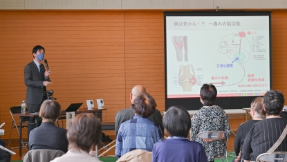
膝痛み予防教室
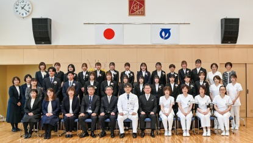
第54回深川市立高等看護学院入学式
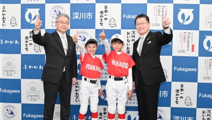
多賀グリーンカップ争奪戦第20回学童軟式野球三年生大会優勝報告
マイナビDANCEL 2024 FINAL
アルテミス北海道バレーボール教室
発信 ! まちのできごと一覧
企業版ふるさと納税
これぞ！ふかがわ名物
合宿の里ふかがわ
ようこそ市長室へ
深川市のあらまし
深川市の条例や規則（別サイト）
パブリックコメント
職員採用情報
市議会会議録検索（別サイト）
市立図書館蔵書検索（別サイト）
電子申請（外部サイト）
市内学校（小・中学校、高校、大学など）
広報ふかがわ2024年2月号
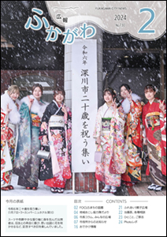
広報バックナンバー
北海道ふかがわ観光サイト（別サイト）
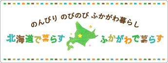
移住・定住のご案内（別サイト）
深川市議会（別サイト）
深ナビ
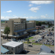
深川市立病院(別サイト)
深川市立図書館(別サイト)
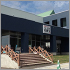
アグリ工房まあぶ(別サイト)
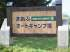
まあぶオートキャンプ場(別サイト)
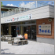
道の駅「ライスランドふかがわ」(別サイト)
拓殖大学北海道短期大学(外部サイト)